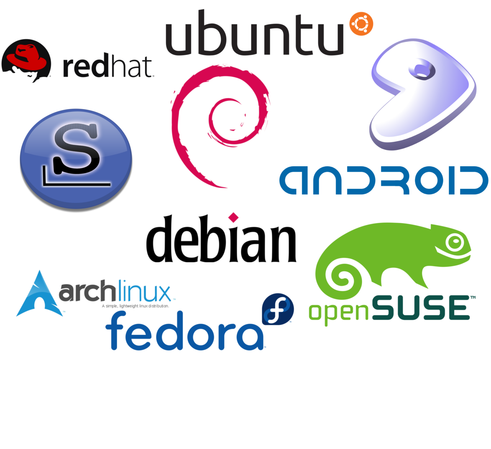
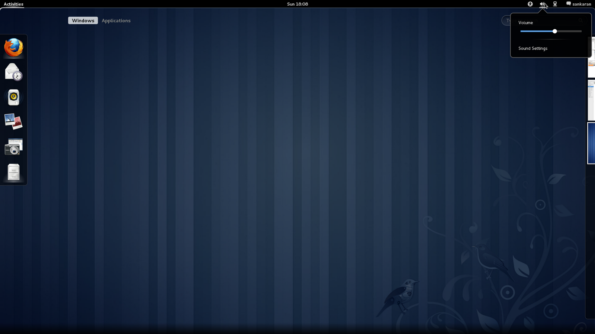
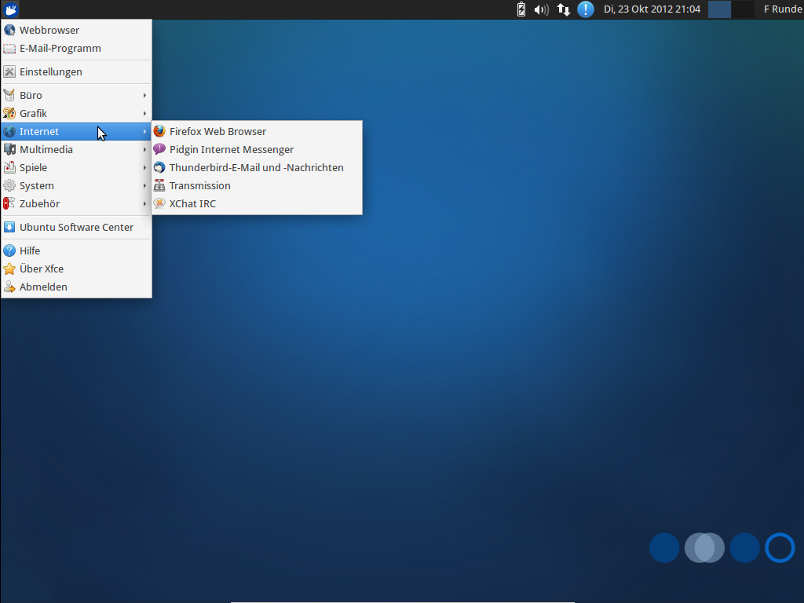
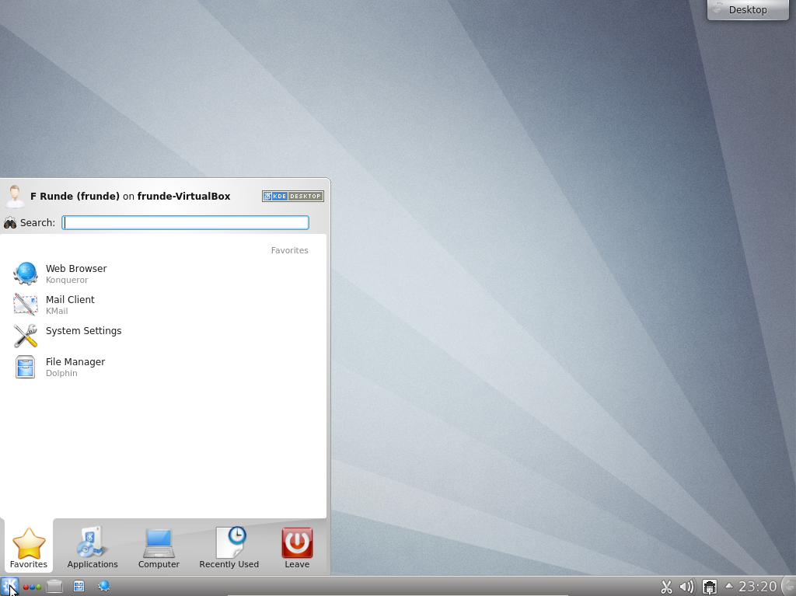

Linux Install Party 2014
Warum wollen wir Linux?
Whoami?
Andreas Hechenberger
Andy[AT]
Informatikstudent
Freitagsrunde seit 2008
EMail: andy@fraitagsrunde.org

Warum Linux?
- Freies Betriebssystem
- Freie Software
- lebt duch die community
- Linux ist großartig und so auch die Auswahl
Linux Distributionen
Empfehlung
- Für Neueinsteiger empfehlen wir ein Ubuntu oder ein anderes Debian-Derivat
- Dabei kann noch zwischen Desktoptypen entschieden werden
- Gnome
- Xfce
- KDE
- ...
GNOME
XFCE
KDE
Und dann
- ... lernt euer neues Betriebssystem kennen und lieben.
- findet euch zurecht
- richtet euer System nach euren wünschen ein
- installiert coole Software
- Mehr dazu später...
Hilfe
- BeLUG - Berliner Linux User Group
jeden Mittwoch 18-22Uhr
Lehrter Straße 53, Berlin
- Internet
- Nach Ubuntu Quantal + Problem suchen
- http://www.ubuntuusers.de (Sehr gutes Wiki!)
- http://www.linuxquestions.org
- http://www.startpage.com
- http://www.youtube.com
Blogs
zum stöbern...
DANKE
und viel Spaß
Source
Tux: http://tuxgallery.weebly.com
Theme inspired by https://github.com/sixfeetup/sixfeetup_hovercraft